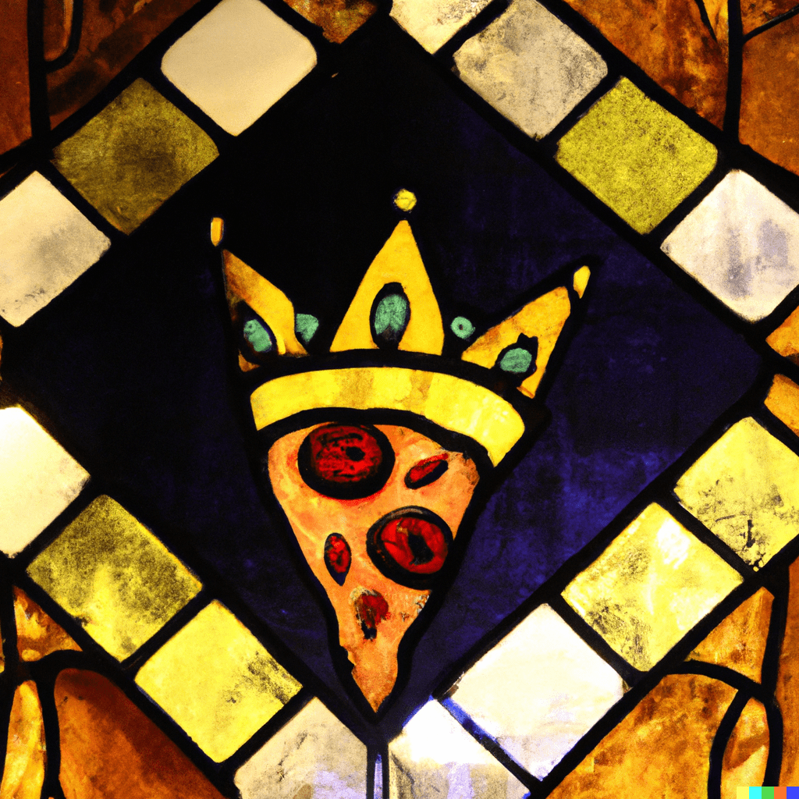

Cycling Resources Guide
Route Planning & Finding
- Strava Route Builder - Can build maps on any platform, but route finder is mobile only
- Komoot - Route building and finding
- Ride with GPS - Route building and finding
- Trail Map - Europe only, attempts to use official bike trails only
- Cycle.Travel - Routes that prioritize bike lanes and paths
- Climb Finder - All European climbs and cols listed, with route builder
- Destinations Gravel - Routes from Kim Gravel
- Ahotu - Find races around the world (gravel, road, fondos)
Tech Tools
- FitFileTools - Webapp for fixing activities (merge split rides)
- GoToes - Activity issue fixer (combine workouts), downloadable app
Training Apps
Gear & Equipment
Saddles
- Posedla Joyseat - Custom 3D printed seat, can do at home, 6-week process ($550 USD)
- Fizik One-to-One - Custom fitted saddle with pressure mapping (requires special tooling, mostly in big cities)
Safety & Visibility
- Dynaplug - Tubeless repair tools
- Garmin Varia RTL515 - Universally accepted best radar on the market
- Bryton Gardia R300L - USB-compatible radar alternative
Lights
- Bookman Volume 150 - Night light ($150, $40 replaceable battery)
- Raveman FR300 - Day light, sits under head unit, can charge head unit
Tires & Tubes
- Silca Tire Pressure Calculator - Modern tire pressure calculations for comfort and speed
- TP Tubes - Super light tire tubes (orange, white, or pink)
Bikepacking Gear
- Topo bike bags
- Lead Out Racelite Frame Bag
- Aeroe Rear Frame + Bag - Clips to rear triangle with mounting stand (5 or 12L)
- Cyclite Frame Bags
- Evoc Road Bike Bag Pro - Travel bag (wheels-only removal, collapsible)
Clothing Brands
Canadian Brands 🇨🇦
- Louis Garneau 🇨🇦
- 7mesh 🇨🇦
- Le Club 🇨🇦 - Carries MAAP
- Safetti 🇨🇦
- Cassette Cycling 🇨🇦 - Casual cycling shirts
International Brands
- Le Col 🇬🇧 (United Kingdom)
- MAAP 🇦🇺 (Australia)
- MBO Cycling 🇺🇸 (United States) - USD $120 bibs
- Siroko 🇪🇸 (Spain) - pelohun10
- Bonk Cycling 🇺🇸 (United States) - Low key, tees more than jerseys
- Attaquer 🇦🇺 (Australia)
- Mercier 🇫🇷 (France)
- Pas Normal 🇩🇰 (Denmark) - NEWSLETTER10 for 10%
- SanPella 🇺🇸 (United States)
- Sportful 🇮🇹 (Italy)
- Ostroy 🇺🇸 (United States) - "resort shirts", casual jerseys
- Q36-5 🇮🇹 (Italy)
- Eliel Cycling 🇺🇸 (United States)
- Cafe du Cycliste 🇫🇷 (France)
- Velocio 🇺🇸 (United States)
- The Syn 🇩🇪 (Germany)
- Rapha 🇬🇧 (United Kingdom)
- Ornot 🇺🇸 (United States)
